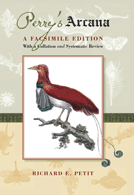

One of the original zoological journals, now in full facsimile
One of the original zoological journals, now in full facsimile


 One of the original zoological journals, now in full facsimile
One of the original zoological journals, now in full facsimile

|  |
Perry's "Arcana"A Facsimile Edition with a Collation and Systematic ReviewRichard E. Petitcloth EAN: 978-1-43990-195-3 (ISBN: 1-43990-195-3) |
From 1810 to 1811, the English architect and amateur naturalist George Perry published a lavishly illustrated magazine on natural history. The Arcana or Museum of Nature ran to 22 monthly parts, with 84 extraordinary hand-colored plates and over 300 text pages describing mammals, birds, reptiles, fish, mollusks, echinoderms, insects, trilobites and plants, alongside travelogues from far-off lands. It presented the first published illustration of the koala and many new genera and species, but astonishingly was then largely forgotten for nearly two hundred years. Perry�s work was deliberately ignored by his contemporaries in England, as he was a supporter of Lamarck rather than of Linnaeus, and the Arcana�s rarity—only thirteen complete copies are known to have survived—has helped maintain its shroud of mystery.
Now at last this neglected gem has been revived for scientists, students, and aficionados of natural history. New scholarship is combined with modern digital reproduction techniques to do full justice to the beautiful plates. An up-to-date account of all the species is given, along with a full collation and extensive notes, by the eminent natural historian Richard E. Petit.
The Arcana is technically interesting too, as its glowing plates were printed with variously colored inks to suppress their outlines. Its appeal will extend not only to academic libraries and scholars specializing in various branches of natural history and the history of science, but also to collectors of beautiful natural history books and enthusiasts of Regency Britain.
Published in Association with the Academy of Natural Sciences of Philadelphia
"After two centuries, Perry's work can now be judged by a modern audience in this handsome fascimile edition. Summing Up: Highly Recommended."
—CHOICE
"While it would be easy to simply delight in the plates and dismiss the text as of little value, from an historical perspective there is something to be gained by taking the time to read it. At the very least Perry's Arcana provides insights into an important period in the development of the natural sciences as we know them today."
—Historical Records of Australian Science
Also available in e-book
George Perry, Jr. (1771-?) was an English architect of the Georgian period. In addition to his periodical the Arcana, he published a large book on shells, the Conchology, for which he is somewhat better known.
Richard Eugene Petit, (1931- ) is a leading scholar of malacology (the study of mollusks) and of its history. For over 45 years he has authored major scholarly works on taxonomy and bibliography as well as original scientific research. He has been a research associate at the Smithsonian Institution and the Field Museum, and is a former president of the American Malacological Society.
Science
Nature and the Environment
History
© 2015 Temple University. All Rights Reserved. This page: http://www.temple.edu/tempress/titles/2070_reg.html.